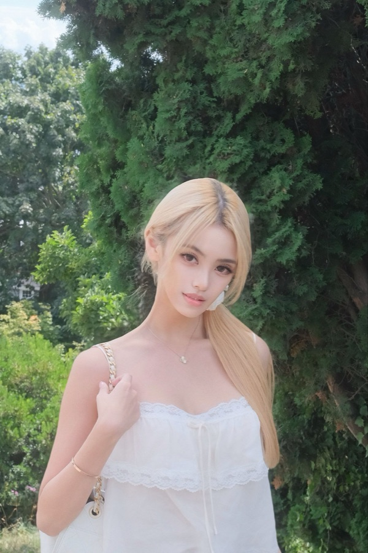
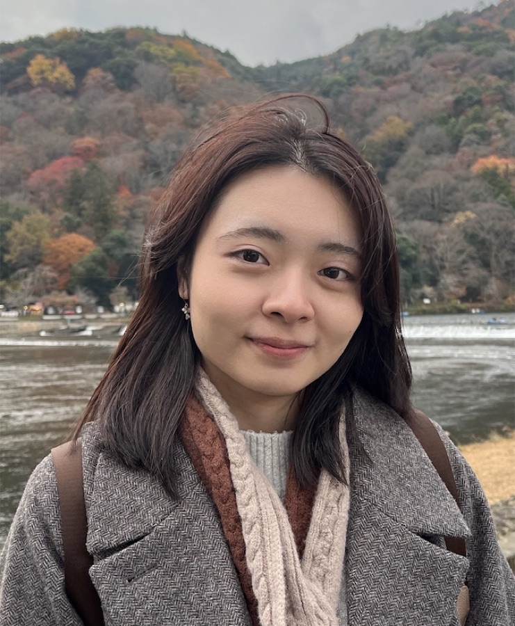

3D Perception & Navigation
Cheng-Ning (Anderlin) Huang
Focuses on 3D perception and autonomous navigation, with experience in Gaussian Splatting, ROS-based autonomy, and production mapping systems.
Carnegie Mellon University · MRSD
Team at a Glance
3D Perception & Navigation
Focuses on 3D perception and autonomous navigation, with experience in Gaussian Splatting, ROS-based autonomy, and production mapping systems.
Control & Kinematic Modeling
Focuses on robot control and kinematic modeling, supported by experience in sensor fusion, mechanical design, and physical human–robot interaction.
Manipulation & Cross-Embodiment Learning
Focuses on robot manipulation and cross-embodiment learning through diffusion policies, egocentric video pretraining, and 3D trajectory alignment.
Robot Learning & Sim-to-Real
Focuses on robot learning and sim-to-real control, with experience in mixed-reality testbeds and safety-constrained autonomous decision-making.
Systems Integration & Autonomy
Focuses on full-stack robotics integration, combining ROS 2 state machines, LiDAR perception, localization, and industrial hardware–software coordination.
Members

Team Member 1
National Tsing Hua University | B.S. in Electrical Engineering and Computer Science
3D Perception · Stair Geometry Understanding · Perception-Driven Navigation

Team Member 2
University of Melbourne | B.S. in Mechatronic Engineering Systems
Humanoid Locomotion · Whole-Body Control · Contact-Aware Stability

Team Member 3
Cornell University | B.S. in Computer Science · Cornell PoRTAL Lab
Contact-Rich Manipulation · Handrail Grasping · Handwheel Operation
Team Member 4
Boston University | B.S. in Computer Engineering
Robot Learning · Sim-to-Real Transfer · Failure Recovery

Team Member 5
National Yang Ming Chiao Tung University | B.S., Double Major in Electronics and Electrical Engineering & Biomedical Engineering
Autonomous Task Planning · State Estimation & Navigation · Full-Stack Systems Integration